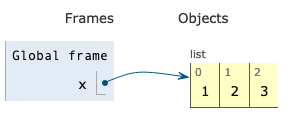
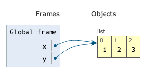
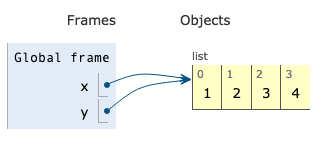
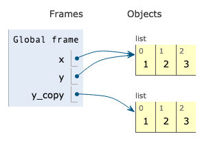
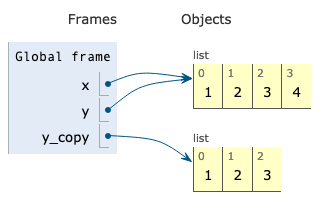
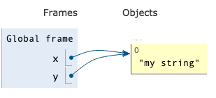
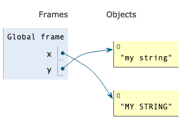

Python: Variables vs. Objects#
In Python, one of the most important concepts to understand is that there is a difference between variables and the objects associated with those variables. This idea is common to many programming languages, but not languages like R or Matlab, so this is one place people new to Python often get into trouble!
In Python, variables and the objects they point to actually live in two different places in your computer. As a result, in Python, it’s best to think of variables as pointing to the objects they’re associated with, rather than being those objects. Personally, I’ve always liked the analogy of your computer being a big warehouse, where variables are just the entries in the inventory book used by the warehouse manager: the variable tells you how to find the thing you want, but it is not the thing itself.
So when you create a new list, Python puts that list somewhere in memory, kind of like how you might put something big on a shelf in a warehouse. The variable associated with that list (say, my_list) actually just stores the location of the shelf where that list was placed. And because this behavior is normal in most languages, you may not see it emphasized in Python tutorials written by programmers not coming from R.
The reason this matters is that it’s possible for multiple variables to be pointed at the same object. As a result, changes made to an object through one variable will impact what you get if you call the other variables pointed at that object! For example:
# Make a new list
x = [1, 2, 3]
# Make new var Y, and assign it x. In R this would make a copy.
y = x
# Add to the end of the string
x.append(4)
# We see this new addition is now at end of x
x
[1, 2, 3, 4]
# But look! It's also at the end of y!
# That's because both variables are actually pointing to the same object in memory ("in the warehouse"),
# so when you appended something to x, you changed the underlying object. And
# since y was also pointed at that same object, when you next call y, it
# "sees" those changes to the underlying list.
y
[1, 2, 3, 4]
If it’s helpful, here’s a visual depiction of what’s going on:
First, we create a list associated with x:

Then we create a var y also pointed at that same list:

Then we modify the list through x, creating a change also visible through y:

If what you want to do is make a copy of x, you use the copy() command. This makes an entirely new list (a new object that looks the same as the old one, but which can be put on a different shelf) so that changes to x won’t impact the list associated with y.
x = [1, 2, 3]
y = x
y_copy = x.copy()
x.append(4)
y_copy
[1, 2, 3]
Visually, this code sequence looks like this:
Start with x and y as before:
Then we make y_copy:

And modify x, changing what we get when we call y, but not y_copy:

If you want to see if two variables point to the same thing, you can use the is operator, which tests whether two variables are pointed at the same place in memory / same shelf:
x is y
True
x is y_copy
False
Note that is is not the same as ==. == asks if the entries in the lists the two variables point at have the same values, while is asks if the two variables are pointing to the exact same object. So:
x = [1, 2, 3]
y = x.copy()
# Since we made a copy, x and y aren't pointing to the same thing...
x is y
False
# But as x and y both point to lists with the entries 1, 2, 3, they point to lists that are equal in terms of their entries
x == y
True
Mutable vs. Immutable Types#
Now a wrinkle.
Certain data types in Python are called “immutable.” That means an object, once created, can’t actually be modified. As a result, if you want to do something that looks like modifying the object, Python has to create an entirely new object that lives in a new location.
Strings, for example, are “immutable.” So if we create a string, then try and modify it, what we’re actually doing is creating a new string that has the features we want.
To illustrate, we can use the id() function. Every object in Python has a unique id(), and so when two variables point to the same object, then id() of those variables will also return the same thing:
# Make x a simple string, then make y point to that same string
x = "my string"
y = x
id(x)
4390275632
id(y)
4390275632
As we can see, x and y point to the same object. But now let’s see what happens if we modify that string:
x = x.upper()
x
'MY STRING'
id(x)
4390266800
Now x has a new value of id(). That’s because calling x actually created a new string that was the uppercase version of “my string,” then we made x point to that new object.
But what happened to y?
y
'my string'
id(y)
4390275632
As we can see, y is still pointing at the old string and still has the same id(). This can be visualized as x and y both pointing to the same string:

Then x being redirected to a new object (“MY STRING”) because strings are immutable (meaning the original value of “my string” couldn’t just be modified in place).

This illustrates one of the nuances of Python: if you mutate a mutable object, that change will propagate to all variables that point at said object. But if you modify an immutable object, a new object will actually be created, so that change will not be accessible to variables pointing at the old object.
What’s mutable, and what’s immutable?#
Here’s quick list of data types you’re likely to encounter that are immutable:
int
float
decimal
complex
bool
string
tuple
And here are common data types that are mutable:
lists
sets
dictionaries
user defined objects
numpy arrays
pandas objects
How do you remember this? It is nearly accurate to say that anything that is a collection of other objects is mutable, except tuples. There are some weird data types that are also collections that are immutable (frozensets, which, as the name implies, are “frozen” and thus can’t be changed), but you’re unlikely to ever use those, and if you do, it’s because you know you want something immutable.
Only some manipulations are mutations.#
OK, now an important nuance: not all manipulations of mutable objects change the object rather than create a new object. Sometimes when you do something to a mutable object, you get back a new object. Manipulations that change an existing object, rather than create a new one, are referred to as “in-place mutations” or just “mutations.” So:
All manipulations of immutable types create new objects
Some manipulations of mutable types create new objects
For example, appending something to the end of a list is an in-place mutation (the existing list is changed). But doing things like doubling up lists using the * create new lists:
x = [2, 5, 3]
y = x
x = x * 2
x
[2, 5, 3, 2, 5, 3]
y
[2, 5, 3]
Similarly, taking a slice of a list gets you a new list:
x = [2, 5, 3]
y = x
x = x[0:2]
x
[2, 5]
y
[2, 5, 3]
A function’s documentation will almost always tell you if a function mutates a list in-place or not, and over time you’ll get a feel for what mutates and what doesn’t, but unfortunately in Python, there is no obvious way to be sure.
Functions and Object References#
Another important thing to know is that the fact that different variables may all be pointing at the same object is preserved through function calls (a behavior known as “pass by object-reference”). So if you pass a list to a function, and that function manipulates that list using an in-place mutation, that change will affect any variable that was pointing to that same object outside the function.
x = [1, 2, 3]
y = x
def append_42(input_list):
input_list.append(42)
return input_list
append_42(x)
[1, 2, 3, 42]
x
[1, 2, 3, 42]
y
[1, 2, 3, 42]
Confused?#
Yeah, that’s reasonable. This is really tricky. Honestly, you probably won’t feel like you “get” this until you play around with it a lot (as we’ll do in class!).